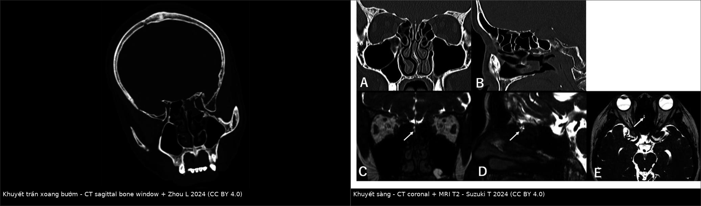
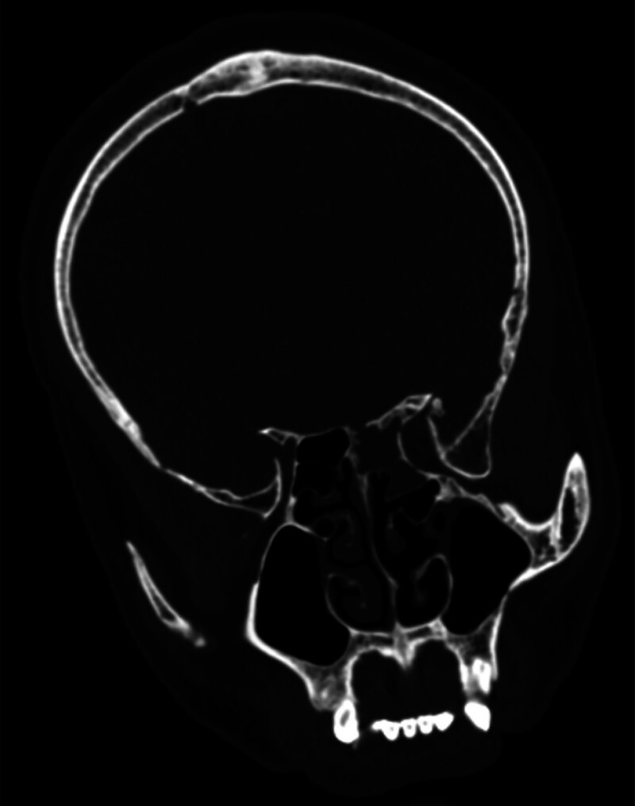
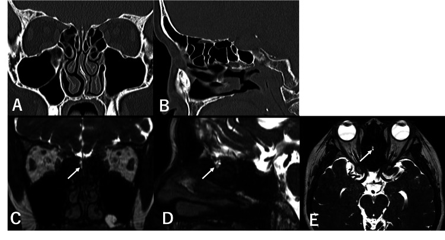

6181 — Rò dịch não tủy sau mổ sọ mặt nâng–tiến ra trước ở trẻ / Postoperative CSF leak after monobloc and Le Fort III advancement
Tags: pattern:ro-dich-nao-tuy pattern:ro-sau-mo pattern:khuyet-xuong-tran-so pattern:thoat-vi-mang-nao pattern:tran-khi-nao vung:so-mat vung:xoang protocol:CT-lat-mong protocol:beta-2-transferrin protocol:dan-luu-that-lung score:Clavien-Dindo
Mức chắc chắn (certainty): tổng hợp y văn (literature synthesis) — số liệu từ 275 trẻ mổ monobloc/Le Fort III đa trung tâm (PMC11584185), 47 trẻ Crouzon mổ Le Fort III (PMC13260441), 18 trẻ vá rò nội soi (PMC10030683) và bài tổng quan xác nhận–định vị rò (PMC11129547). Phần thời gian dẫn lưu thắt lưng và kháng sinh dự phòng không có thử nghiệm ngẫu nhiên — ghi rõ là suy luận/thực hành.
Câu chốt: rò dịch não tủy là biến chứng thường gặp nhất của chính đường mổ — 22% sau monobloc/Le Fort III, và 36% sau monobloc so với 10% sau Le Fort III. Vì vậy mọi trẻ sau mổ sọ mặt có nước trong chảy ra mũi/vết mổ phải được coi là rò cho tới khi loại trừ, và điều trị khác hẳn "chảy dịch sau mổ": không bơm rửa mũi, không CPAP, không đặt nội khí quản đường mũi, xác nhận bằng beta-2 transferrin, hạ áp lực bằng dẫn lưu thắt lưng, và mổ lại vá màng cứng nếu không tự đóng.
1. Tổng quan bệnh học – cơ chế hình ảnh
1.1 Vì sao đường mổ sọ mặt đi qua khoang dưới nhện
- Monobloc cắt rời khối xương trán–mũi–gò má và Le Fort III cắt rời khối mặt giữa ở trần sàng, trần xoang sàng, trần ổ mắt — những nơi màng cứng dính sát xương và chỉ cách vài mm. Đường cắt vì vậy luôn có nguy cơ rách màng cứng, dù không thấy rách đại thể.
- Sau khi nâng–tiến ra trước, khoang mổ mở rộng, xoang mũi thông với khoang ngoài màng cứng; nếu màng cứng không kín nước, dịch não tủy đi theo đường áp lực thấp ra mũi hoặc vết mổ.
- Trẻ khác người lớn: xương mỏng, màng cứng mỏng, xoang chưa khí hóa hết (đường rò ngắn), và dụng cụ nâng–kéo tạo lực xé trên màng cứng; đồng thời trẻ khó hợp tác nên ho, khóc, bú làm tăng áp lực trong ổ mổ những ngày đầu.
- Vì sao quan trọng: đường rò là cửa vào của vi khuẩn mũi → viêm màng não, áp-xe não, viêm não thất; trong loạt 18 trẻ rò, 61,1% (11/18) đã có viêm màng não trước khi vá (PMC10030683).
1.2 Vật lý hình ảnh: TẠI SAO dịch não tủy không phân biệt được bằng mắt
- Dịch não tủy = nước + điện giải, gần như không đạm/tế bào → trên CT 0–15 HU, không phân biệt được với nước rửa, niêm dịch loãng hoặc nước mắt; trên MRI T1 giảm, T2 tăng mạnh.
- Chỉ có hai thứ giúp phân biệt: (1) thành phần protein đặc hiệu — beta-2 transferrin (dạng transferrin mất acid sialic, chỉ có trong dịch não tủy, dịch tai trong, thủy dịch, dịch kính) với ngưỡng phát hiện 2 µg/mL; (2) vị trí giải phẫu — khuyết xương đúng đường cắt trên CT lát mỏng.
- Thoát vị màng não–não trên MRI: mô não đồng tín hiệu vỏ não + dịch màng não tăng tín hiệu chui qua khuyết xương — khác mô sẹo/niêm mạc phì đại (tín hiệu trung gian, không liên tục với khoang dưới nhện).
- Khí trong sọ (pneumocephalus/pneumoventricle): khí −1.000 HU, tối trên mọi chuỗi MRI; khí trong não thất sau mổ sọ mặt là dấu hiệu gián tiếp của thông thương còn hoạt động.
1.3 Ngưỡng định lượng phải nhớ
| Chỉ số | Con số | Nguồn |
|---|---|---|
| Rò dịch não tủy sau monobloc/Le Fort III | 22% (61/275) | PMC11584185 |
| Theo loại mổ | monobloc 36% (46/129) vs Le Fort III 10% (15/146) | PMC11584185 |
| Viêm màng não sau mổ | 1% (3/275) | PMC11584185 |
| Nhiễm vết mổ / viêm phổi sau mổ | 9% / 9% | PMC11584185 |
| Rò dịch não tủy sau Le Fort III (loạt 47 trẻ Crouzon) | 4,3% (2/47), xếp Clavien–Dindo II | PMC13260441 |
| Định nghĩa rò trong nghiên cứu đó | chảy dịch trong từ vết mổ/mũi/tai + glucose > 30 mg/dL | PMC13260441 |
| Beta-2 transferrin (điện di miễn dịch) | ngưỡng 2 µg/mL; Sn 87–100% / Sp 71–94% | PMC11129547 |
| Glucose dịch mũi | Sn tới 100% nhưng Sp chỉ 45% | PMC11129547 |
| CT định vị lỗ rò | 70% ca đã xác nhận | PMC11129547 |
| Trẻ rò được vá nội soi | sàng 66,7%, lỗ trung vị 8 mm, thoát vị 77,8%, đóng kín 100% | PMC10030683 |
2. Mẫu hình + chẩn đoán phân biệt theo thời điểm sau mổ (Gamut)
- Ngay trong 24 giờ — "thì hậu phẫu sớm": dịch lẫn máu, khó phân biệt với nước rửa/niêm dịch; nếu chảy thành giọt trong, tăng khi cúi/khóc → nghi rò thật.
- Ngày 2–7 — "thì rò rõ": dịch trong, không màu, một bên, không đáp ứng thuốc co mạch/kháng histamine; có thể kèm đau đầu tăng khi ngồi, buồn nôn.
- Sau khi bắt đầu kéo giãn (distraction) vài tuần — "thì muộn": lực kéo làm mở rộng khe cắt → rò xuất hiện hoặc tái phát; đây là lý do phải theo dõi cả trong giai đoạn kéo giãn, không chỉ những ngày nằm viện.
- Theo đường ra:
- Qua mũi (hay gặp): từ trần sàng/trần xoang sàng ra khe khứu hoặc khe giữa.
- Qua vết mổ trán–thái dương: dịch thấm băng liên tục, dễ bị cho là tụ dịch dưới da (pseudomeningocele).
- Qua tai: chỉ khi đường cắt/ chấn thương lan tới xương đá (bài 244 bàn mặt chấn thương).
- Biến chứng sớm phải loại trừ song song: viêm màng não (sốt, cứng gáy, li bì), áp-xe não, pneumocephalus căng, tụ máu ngoài/dưới màng cứng.
3. Bảng so sánh phân biệt (ma trận đối chiếu)
| Thực thể (entity) | Hình ảnh/lâm sàng điển hình | Chốt vào (rule-in) | Chốt loại (rule-out) | Gợi ý xác nhận |
|---|---|---|---|---|
| Rò dịch não tủy sau mổ | Dịch trong, một bên, chảy giọt khi cúi/khóc; CT: khuyết xương đúng đường cắt, có thể khí trong sọ | Rò sau mổ + beta-2 transferrin dương + khuyết xương đúng vị trí | Dịch đục, vàng, có mủ, không tăng khi cúi → nghĩ niêm dịch/nhiễm | Beta-2 transferrin; CT 0,6–1 mm; MRI T2 nặng |
| Dịch mũi hậu phẫu bình thường | Lẫn máu, giảm dần 48–72 giờ, không liên quan tư thế, niêm mạc phù | Giảm nhanh, không trong, không tái phát khi cúi | Trong, tăng khi cúi, kéo dài > 72 giờ → phải loại trừ rò | Theo dõi 48–72 giờ; B2T nếu còn nghi |
| Thoát vị màng não–não qua đường cắt | MRI: mô não + dịch màng não qua khuyết xương; lâm sàng có thể tắc mũi một bên, không chảy dịch | MRI thấy mô não trong đường rò | MRI chỉ có mô sẹo/niêm mạc, không liên tục khoang dưới nhện | MRI T2 nặng + T1 sau tiêm; không sinh thiết |
| Pseudomeningocele (tụ dịch dưới da) | Khối dịch dưới da, căng, không đỏ, không chảy ra mũi | Khối dịch dưới da + MRI thấy túi dịch ngoài màng cứng | Chảy dịch ra ngoài hoặc khí trong sọ → có thông thương | MRI/CT; theo dõi áp lực |
| Viêm màng não sau mổ | Sốt, cứng gáy, li bì; dịch não tủy qua chọc dò: tế bào tăng, glucose thấp | Sốt + màng não + cấy/B2T dương | Không sốt, không màng não → ít nghĩ | Chọc dò khi an toàn; kháng sinh sớm |
| Rò muộn sau kéo giãn | Dịch trong xuất hiện sau khi tăng lực kéo vài tuần; CT: khe cắt rộng ra | Rò xuất hiện đúng giai đoạn distraction + khuyết xương rộng | Rò ngay sau mổ, đã xử lý → nghĩ tái phát tại chỗ vá | CT so sánh; giảm/ngừng kéo giãn |
| Chảy nước mắt tràn | Mắt chảy nước liên tục, không phải mũi; phù mi sau mổ | Nước mắt chảy qua mi, không qua lỗ mũi | Dịch từ mũi khi bịt mắt → không phải nước mắt | Khám mắt; test bịt |

Ảnh minh hoạ cơ chế khuyết xương trần sọ + đường rò (từ ca chấn thương và rò tự phát ở người lớn, không phải ca hậu phẫu sọ mặt). Trái: khuyết trần xoang bướm trên CT sagittal (Zhou L 2024, CC BY 4.0). Phải: (A–B) khuyết sàng/trần sàng trên CT, (C–E) MRI T1/T2 với mũi tên chỉ đường rò (Suzuki T 2024, CC BY 4.0). Ảnh ghép letterbox, giữ nguyên tỷ lệ.4. Protocol hậu phẫu + ngưỡng xử trí
4.1 Ngày 0–7: nhận diện và xác nhận
| Bước | Việc làm | Ngưỡng/lưu ý |
|---|---|---|
| 1. Theo dõi băng/gạc | Ghi số lần thấm ướt, màu dịch, có trong không | Dịch trong, thấm liên tục hoặc chảy giọt khi cúi = nghi rò |
| 2. Xác nhận | Beta-2 transferrin trên dịch (lấy ống sạch, không lấy trên gạc) | ngưỡng 2 µg/mL, Sn 87–100% / Sp 71–94%; glucose strip không đủ (Sp 45%) |
| 3. Định vị | CT 0,6–1 mm cửa sổ xương, dựng coronal + sagittal, FOV giới hạn | tìm được 70% lỗ rò; đánh giá khí trong sọ, khe cắt, mảnh ghép |
| 4. Đánh giá mô mềm | MRI T2 nặng (CISS/FIESTA) khi nghi thoát vị hoặc CT âm | thấy mô não trong túi, túi dịch ngoài màng cứng |
| 5. Loại trừ nhiễm | Cấy dịch, CRP, khám màng não; chọc dò khi đã loại trừ tăng áp lực | viêm màng não 1% sau mổ nhưng 61% ở trẻ rò kéo dài |
4.2 Điều trị: hạ áp lực trước, vá sau
- Bảo vệ đường rò ngay: đầu cao 30°, không xì mũi/bơm rửa mũi, không đặt nội khí quản đường mũi, không CPAP mask (thổi khí vào đường rò), tránh Valsalva/khóc nhiều; nới khung kéo giãn nếu rò xuất hiện trong giai đoạn distraction.
- Dẫn lưu thắt lưng (CSF diversion): 5–10 mL/giờ (≈ 120–240 mL/ngày) trong 3–5 ngày — thực hành/suy luận, không có RCT ở trẻ; theo dõi quá dẫn lưu (đau đầu thế đứng, pneumocephalus căng, tụ máu dưới màng cứng).
- Thời điểm vá lại: vá sớm (≤ 7 ngày) khi rò kéo dài > 5–7 ngày, tái phát, có thoát vị mô não, có viêm màng não, hoặc khí trong sọ tăng; có thể vá nội soi nếu đường rò ở trần sàng/trần bướm, mổ mở nếu đường rò nằm trong khoang mổ sọ mặt/trần ổ mắt.
- Kỹ thuật vá ở trẻ: mỡ/chất tiêu bịt lỗ (bath-plug) + mảnh niêm mạc cuốn giữa + keo fibrin — trong 18 trẻ, 100% đóng kín, không tái phát trong 50–70 tháng, và không cần dẫn lưu thắt lưng thường quy ở nhóm chọn lọc này (PMC10030683).
- Kháng sinh: điều trị khi có nhiễm; kháng sinh dự phòng kéo dài không chứng minh giảm viêm màng não và làm chọn lọc vi khuẩn kháng — đây là suy luận/thực hành, không phải số liệu từ hai đoàn hệ trên.
- Trước mổ lại: xác nhận không tăng áp lực nội sọ (nếu có, phải dẫn lưu/shunt song song), vì vá mà còn tăng áp lực → tái rò.
flowchart TD
A[Trẻ sau monobloc hoặc Le Fort III có dịch trong ở mũi hoặc vết mổ] --> B[Xác nhận beta-2 transferrin, không dùng glucose strip đơn thuần]
B -->|Âm và dịch giảm trong 72 giờ| C[Theo dõi hậu phẫu thường quy]
B -->|Dương hoặc rò kéo dài| D[CT 0,6-1 mm coronal và sagittal, tìm khuyết xương và khí trong sọ]
D --> E[MRI T2 nặng nếu nghi thoát vị hoặc CT âm]
E --> F[Rò đơn thuần, không thoát vị]
E --> G[Có thoát vị mô não hoặc khuyết rộng]
F --> H[Đầu cao, tránh Valsalva và CPAP, dẫn lưu thắt lưng 3-5 ngày]
G --> I[Chỉ định vá lại sớm]
H --> J{Còn rò sau 5-7 ngày?}
J -->|Không| K[Theo dõi tiếp, kiểm tra khi kéo giãn]
J -->|Có| I
I --> L[Vá màng cứng: nội soi hoặc mổ mở, mỡ và mảnh niêm mạc]
L --> M[Loại trừ tăng áp lực nội sọ và nhiễm trùng sau mổ]
5. Biến thể bình thường và cạm bẫy
- Glucose strip dương không chốt được: Sp 45% — máu, nước mắt, niêm dịch đều dương; định nghĩa "glucose > 30 mg/dL" trong một nghiên cứu là tiêu chuẩn nghiên cứu, không phải tiêu chuẩn chẩn đoán.
- "Chảy dịch sau mổ là bình thường": đúng với dịch lẫn máu giảm trong 48–72 giờ; dịch trong, tăng khi cúi, kéo dài là rò — đừng chờ đến khi có sốt.
- Rò xuất hiện muộn trong giai đoạn kéo giãn: theo dõi cả vài tuần sau xuất viện, đặc biệt khi tăng lực kéo; CT so sánh khe cắt.
- Viêm màng não có thể là dấu hiệu đầu tiên: trẻ sốt, li bì, cứng gáy sau mổ sọ mặt phải cấy + chọc dò khi an toàn, không chờ thấy rò rõ.
- Khí trong sọ: một ít khí vài ngày đầu có thể tồn dư; khí tăng lên hoặc trong não thất = thông thương hoạt động.
- Bơm rửa/xịt mũi, hút mũi, đặt sonde mũi đều có thể mở lại đường rò hoặc đẩy vi khuẩn vào màng não — ghi rõ trong y lệnh hậu phẫu.
- Satisfaction of search: đường cắt hai bên có thể có hai chỗ rò; thấy một chỗ vẫn phải xem toàn bộ trần sọ trên CT.
- Tụ dịch dưới da (pseudomeningocele) không phải "ổ áp-xe": không chọc mù khi chưa loại trừ thông thương; chọc có thể tạo đường rò mới.
6. Tự lượng giá — Blind Quiz
Ca 1 — Bé gái 6 tuổi sau monobloc, ngày hậu phẫu 3: băng mũi thấm ướt liên tục, dịch trong, chảy giọt khi cúi đầu. Bé không sốt. Bước tiếp theo?

- Câu hỏi: (A) CT và (B) MRI minh hoạ tổn thương gì? Vì sao không được bơm rửa mũi và không dùng CPAP? Xác nhận bằng xét nghiệm nào?
Bấm để hiện đáp án
- (A) khuyết trần sọ; (B) thoát vị màng não–não qua khuyết xương — cơ chế giống đường rò sau mổ sọ mặt.
- Bơm rửa/hút mũi và CPAP làm tăng áp lực và thổi khí/dịch qua đường rò, tăng nguy cơ pneumocephalus và viêm màng não.
- Xác nhận: beta-2 transferrin (ngưỡng 2 µg/mL); glucose strip không đủ (Sp 45%). Định vị: CT 0,6–1 mm.
- Nguồn ảnh: Torabi SJ et al., Laryngoscope Investig Otolaryngol 2024 (PMC11129547), CC BY-NC-ND 4.0 — nguyên bản.
Ca 2 — Bé trai 8 tuổi sau Le Fort III, ngày 5: dịch mũi trong đã giảm, nhưng đau đầu tăng khi ngồi dậy và buồn nôn. CT sagittal dưới đây (ca khác) cho thấy khuyết trần bướm. Nên làm gì?

- Câu hỏi: Vì sao đau đầu tăng khi ngồi lại phù hợp với rò? Hai nguy cơ phải loại trừ trước khi tăng dẫn lưu?
Bấm để hiện đáp án
- Đau đầu tăng khi ngồi, giảm khi nằm = giảm áp lực nội sọ do mất dịch — gợi ý rò còn hoạt động, dù chảy mũi ít.
- Loại trừ pneumocephalus căng (khí tăng, tri giác xấu) và tụ máu dưới/ngoài màng cứng trước khi tăng tốc độ dẫn lưu.
- Hướng: dẫn lưu thắt lưng 5–10 mL/giờ, 3–5 ngày, đầu cao, tránh Valsalva; vá lại nếu còn rò sau 5–7 ngày hoặc có thoát vị.
- Nguồn ảnh: Zhou L et al., Medicine (Baltimore) 2024 (PMC11608663), CC BY 4.0.
Ca 3 — Bé gái 5 tuổi sau mổ sọ mặt 3 tuần, đang kéo giãn: xuất hiện lại nước trong một bên mũi. CT coronal và MRI dưới đây (ca rò tự phát ở người lớn) minh hoạ lỗ rò sàng. Xử trí?

- Câu hỏi: Vì sao rò xuất hiện lại đúng lúc kéo giãn? Nên giảm lực kéo hay mổ vá ngay? Cần kiểm tra gì trước khi vá?
Bấm để hiện đáp án
- Lực kéo làm khe cắt rộng ra và màng cứng bị căng → đường vá bung hoặc rách mới; đây là cơ chế rò muộn đặc thù của distraction.
- Trước hết giảm/ngừng kéo giãn và hạ áp lực (đầu cao, dẫn lưu thắt lưng); nếu vẫn rò → vá lại (nội soi nếu ở sàng/bướm, mổ mở nếu trong khoang mổ).
- Kiểm tra: beta-2 transferrin, CT 0,6–1 mm tìm khuyết và khí trong sọ, MRI loại trừ thoát vị mô não, và loại trừ tăng áp lực nội sọ.
- Nguồn ảnh: Suzuki T et al., Cureus 2024 (PMC11234242), CC BY 4.0.
Bài liên quan chéo
- 244 – Rò dịch não tủy sau chấn thương nền sọ ở trẻ: HRCT/MRI & chỉ định vá
- 3092 – Nhiễm trùng mảnh ghép sau nắn gò má ở trẻ
- 3105 – Tràn khí ổ mắt sau chấn thương gò má
- 3026 – Tụt não nghịch lý sau chọc dò/shunt mở sọ
Không dùng để chẩn đoán độc lập khi chưa có người hướng dẫn.